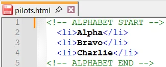
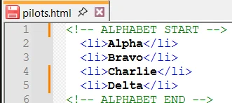
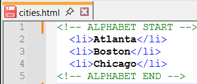
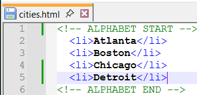
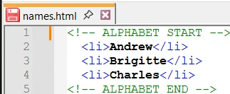
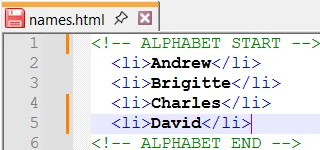
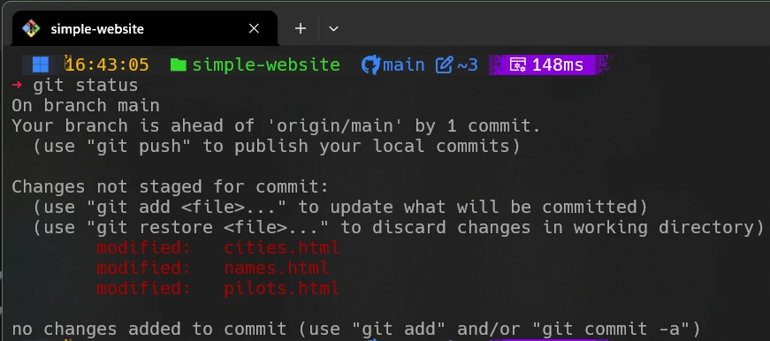
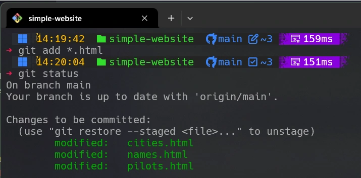
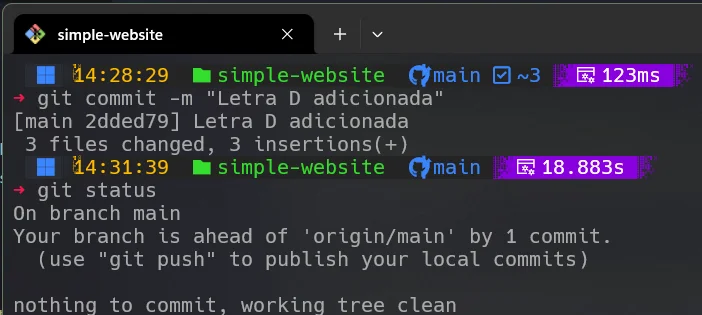
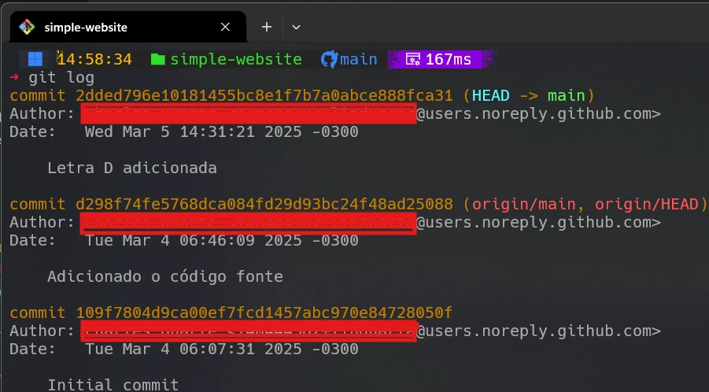

Feature Request
Durante a vida de um projeto de software, é comum a necessidade de implementar novas funcionalidades. Essas funcionalidades são conhecidas como feature requests e geralmente são solicitadas pelos usuários do software.
Nesta página, vamos implementar uma feature request no projeto de exemplo. Seguindo o projeto simple-website, vamos adicionar a letra D ao Phonetic Website.
Para realizar essa tarefa, devemos modificar três arquivos HTML localizados no diretório de trabalho do projeto. Usamos o Notepad++ para editar os arquivos HTML, que podem ser visualizados antes e depois das alterações:


As imagens acima mostram as alterações realizadas no arquivo pilots.html.


As imagens acima mostram as alterações realizadas no arquivo cities.html.


As imagens acima mostram as alterações realizadas no arquivo names.html.
Agora queremos adicionar essas alterações ao repositório Git.
Por que o Git usa duas fases — stage e commit? O stage agrupa mudanças que farão parte de um commit significativo. O commit grava essas mudanças no repositório.

A imagem mostra claramente que os três arquivos HTML foram modificados e ainda não foram adicionados ao stage.
Para adicionar as mudanças ao repositório, usamos o comando git add seguido do nome do arquivo.
Para adicionar todos os arquivos modificados, usamos git add .

A imagem abaixo mostra o commit realizado após a adição dos arquivos HTML, bem como o git status indicando que o repositório local está à frente do remoto.

Vendo a história do projeto
Você pode verificar a história dos commits usando:
git log

A imagem acima mostra cada commit com seu hash completo, autor, data e mensagem. O commit mais recente aparece no topo.
Podemos usar também:
git log --oneline --decorate

O hash reduzido de 7 caracteres é extraído do início do hash completo.
O Git Graph abaixo representa os commits realizados no branch main.
Git Graph
Diagrama Mermaid para o Git Graph
Mermaid Code
gitGraph
commit id: "0-109f780"
commit id: "1-d298f74"
commit id: "2-2dded79"